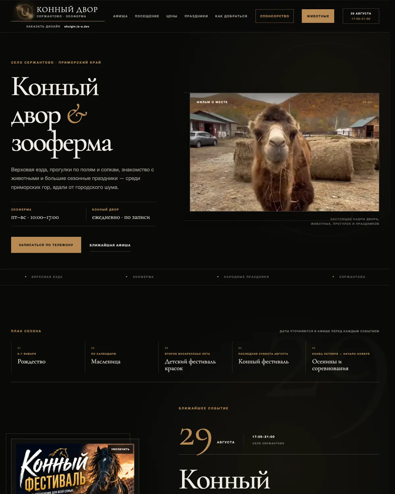
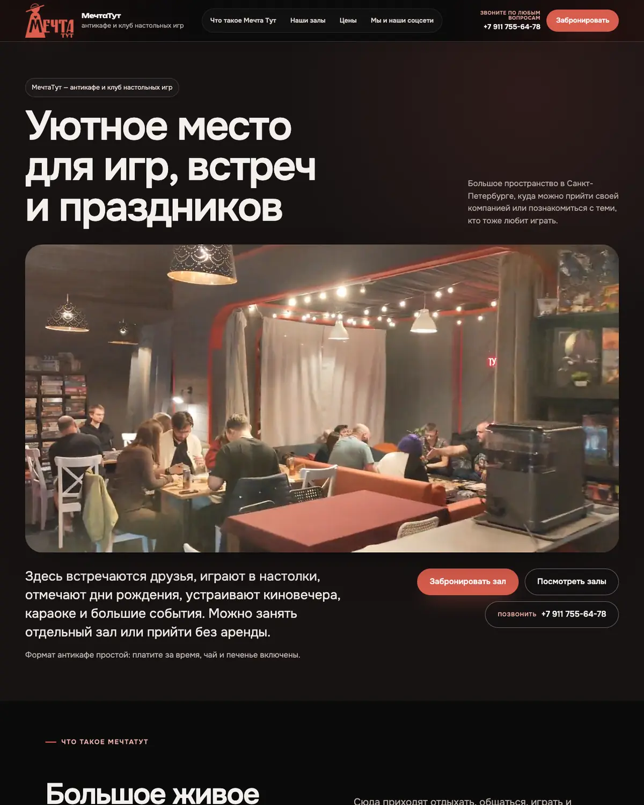
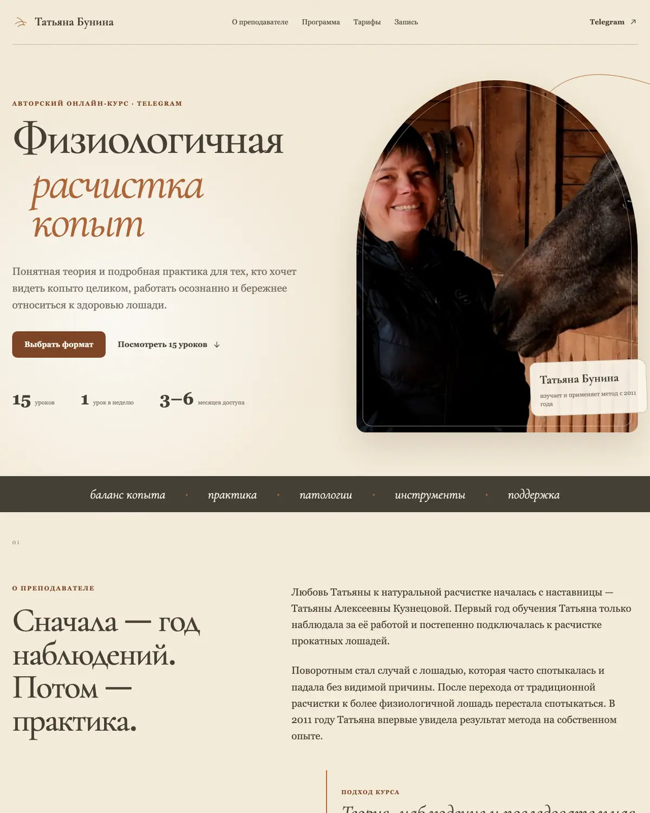
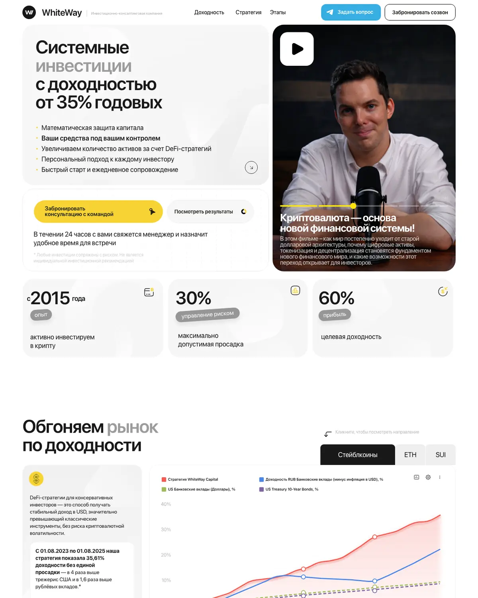
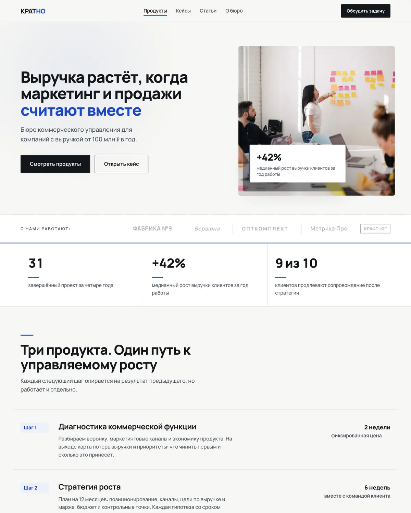
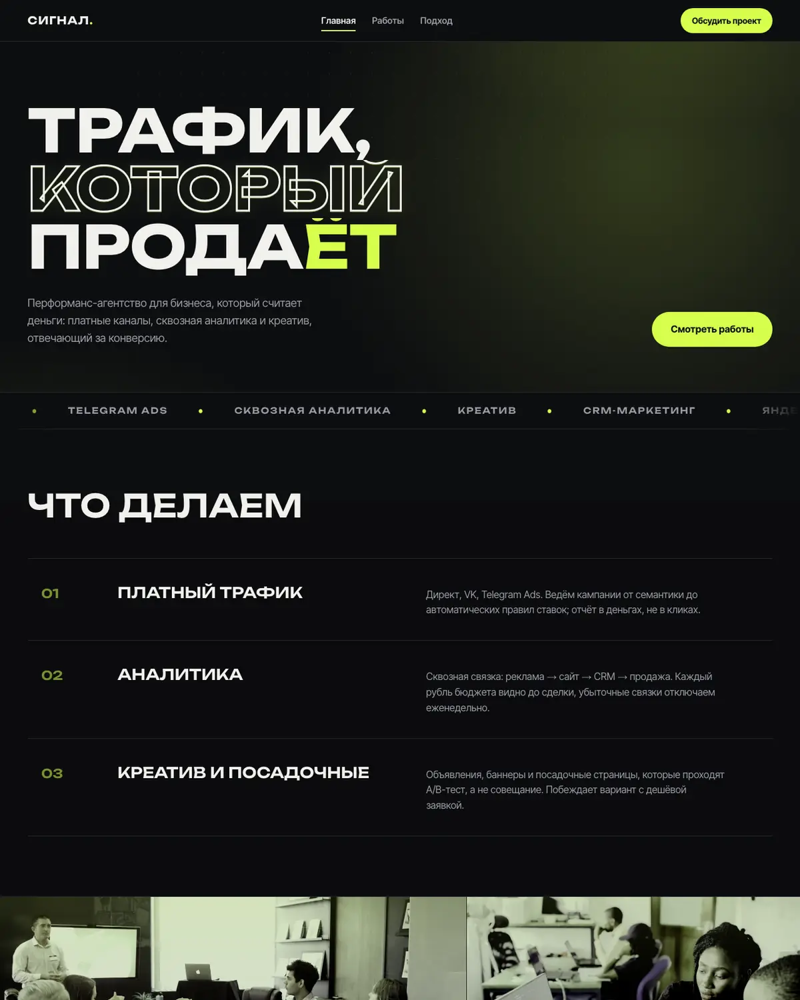

I turn a task described in plain words into working software.
A website, a bot, automation, an app, an AI assistant. Describe what gets in your way or what you want, in your own words. Within one business day I'll tell you whether it can be done, how, and what it costs.
Live and working
Not screenshots for the album: everything is live at its own address. Four sites were built for clients and an employer, two were built as examples: the companies are invented, the sites are real.

Horse yard in Serzhantovo
Events, animals, prices, directions. The owner edits texts and photos herself, from her phone, no developer required.
Open the site
Mechta Tut
A board-game anti-café in St. Petersburg: rooms, prices, booking, room galleries. Ads point to the site and it welcomes guests every day.
Open the site
Tatiana Bunina's course
A page for an author's online course: programme, pricing, sign-up via Telegram. Lives at its own address, the client runs it herself. Built for a client in Russia.
Open the site
WhiteWay
The website of an investment consultancy: structure, texts, video, consultation booking. Built on a site builder, for when launch speed matters more than custom code.
Open the site
Kratno bureau
What a services site looks like: clear structure, cases, an enquiry form. The company is invented, the site is real.
View
Signal studio
For those who sell results: numbers, testimonials, a calculator right on the page. The company is invented, the site is real.
ViewBeyond websites: trading systems running on real money, a Mac app in the store, research and analytics tasks. Technical details are in the portfolio.
Available today, price known
Two things that need no discussion: download or order, and it's yours. They also show the price range.
Qwerty Switcher
$6 / moA Mac app that fixes text typed in the wrong keyboard layout, no cloud involved. 14 days free, no card needed.
Download and tryАудит сайта на штрафы РКН
500 ₽Первый шаг бесплатный: проверка главной за минуту, без контактов. Полный аудит по 16 пунктам с суммами штрафов за 500 ₽, отчёт за день.
Заказать проверкуFixing an AI-built website
$119The site was built with an AI tool and behaves oddly. I find what no automated scan sees, fix it and show before and after.
See a sample reportНе знаете, нужен ли аудит? Бесплатная проверка сайта за минуту покажет, что нарушено на главной и чем грозит. Дальше по лестнице: полный аудит за 500 ₽ → исправления от $119 → сопровождение.
Everything else is made for you. I name the sum in writing after we talk, before work starts, and it doesn't change. More about pricing.
No jargon and no ten-page briefs
-
1
A conversation and an estimate
Fifteen minutes in chat or by voice. You tell me what you do and what gets in the way. I ask the questions, you don't need to know the tech. By the end of the next business day you have it in writing: what we do, how long it takes, what it costs.
-
2
I show you how it will look
A few days later you get a mockup or a working piece: with your photos and texts, not an abstract example from the internet.
-
3
We refine together
You say what to change. I change it. That's part of the job, not a "paid extra".
-
4
Launch
It opens at your address, works on phones, enquiries reach you. I show you how to use it all, in plain words.
-
5
I stay around
Small fixes are included for a month after launch. After that, it's simple: you write, I answer.
Already know what you need? Write two lines, within a day I'll answer how it can be done and what it costs.
Who it's for, and who it isn't
Works well when
- the task is described as a result: "I want clients to book themselves", not "I need a site on platform X"
- you want one person responsible for everything, not a team with a manager
- in the first days someone can answer my questions and send materials
- any size of business: from a one-person practice to a company with departments
I don't take it when
- "make it exactly like the competitor's"
- it's needed by tomorrow morning, and it's two weeks of work
- nobody can make decisions: edits come from three people and contradict each other
- fake engagement, spam mailings, deceiving users
Rules I don't bend
Everything stays yours
The address, the access, the materials. No fee for the fact that it simply keeps working.
The price doesn't grow along the way
I name the sum in writing after we talk, before work starts, and it doesn't change.
I'll say if it's not worth it
If a task won't pay off, or a ready-made service does it better, you'll hear that right away.
Official paperwork
Contract and receipt, payment by card or invoice, whichever suits you or your accountant.
Sixty tasks I've already solved
Eight groups, open yours. The list isn't complete: half of the tasks come in people's own words, and that's fine.
-
A place online
A site with prices and a contact form, a store with payments, moving from your old developer, and five more- A website: services, prices, photos, a contact form
- A site you edit yourself from your phone The horse farm works this way
- A store with a cart and payments
- A page for an event, a tour, enrollment, a course For example, a course
- Your own domain, say salon-vesna.com, and email on it
- Google Maps and local directories: so people find you nearby
- Moving your site from a previous developer
- Fixing what you already have but works poorly
-
Clients and bookings
A bot that books appointments, online booking with a calendar, reminders for clients, and five more- A Telegram bot: takes a request and books a time slot
- Online booking with a calendar and open slots
- A reminder to the client before the visit
- Requests land on your phone right away
- A simple client list: who came, when, for what
- Taking deposits and issuing receipts
- Collecting reviews after a visit, without you lifting a finger
- A mailing list for regulars: a promo, something new, "haven't seen you in a while"
-
For yourself, not for business
There doesn't have to be a business: digitizing an archive, a club bot, a smart home without subscriptions, and five more- A small program built for your exact problem, one that doesn't exist off the shelf Like my Mac app
- A bot for a chat, a club, a community
- Digitizing an archive: film, papers, recordings, albums
- A memory site about a family, a trip, a project
- Tracking a collection, a library, recipes, workouts
- Smart home and household automation without subscriptions
- A game or interactive thing you've been wanting to build
- Your own AI at home: private, nothing sent outside
-
Routine the machine can do
Weekly reports, a contract and invoice from a template, competitor prices, and five more- Reports and exports you currently compile every week
- Moving data between spreadsheets, your site and marketplaces, without copying by hand
- Tracking competitor prices
- A contract, invoice and delivery note from a template, in seconds
- Tracking inventory, shifts, schedules
- Leads from marketplaces, social media, WhatsApp and your site into one inbox
- Reminders for staff and for yourself
- Sorting email and documents without moving things by hand
-
AI assistants
Answers clients using your price list, turns calls into text, searches your documents, and five more- Answers clients using your price list and rules
- Writes product descriptions, posts and replies to reviews
- Turns calls and voice messages into text and a short summary
- Search through your documents: "where was that contract"
- Sorts incoming requests by priority
- Reads through reviews and shows what people complain about most
- An assistant that lives on your own computer, no cloud
- Translation and voiceover for your materials
-
How people see you
A video made from your photos, profile design, a logo and colors, and five more- A short video for social media made from your photos
- Profile design: cover, avatar, header
- Social media that runs itself: a post goes out every day. See how it looks
- A logo and brand colors, if you don't have them
- A pitch deck and proposal
- Editing product photos into one consistent look
- Print: business cards, menus, price tags, signage
- Screen recordings: how to use your product
-
Numbers and decisions
Revenue and leads on one screen, which ads paid off, how much to stock for the season, and three more- A simple dashboard: revenue, leads, workload
- Which ads paid off and which didn't
- How much to order for the season
- Which clients keep coming back and who's gone quiet
- Tracking mentions of you
- Pulling data from different places into one picture
-
Order and peace of mind
Backups, access registered in your name, a security check before launch, and three more- Backups, so nothing disappears
- Access registered to you, not to the contractor
- A security check before launch
- Speed: so the page loads right away
- Sorting out "what do I even have" and what to do with it
- A second opinion on another developer's work
What people ask before we start
What does it cost?
I name the sum in writing after we talk, before work starts, and it doesn't change. I don't publish exact prices in advance: the same task in words can take two days or a month. The ready-made items above show the price range.
What will I have to pay later?
You don't pay me anything just for the finished work running: I don't charge a subscription. There are direct costs left over: the domain and hosting, and if it's a bot or an AI assistant, a server and the fee for calls to the model. I'll calculate what that comes to per month and tell you before we start, and you pay those directly, not through me. Small fixes are free for a month after launch, bigger changes we price separately.
I don't understand tech at all.
That's how it should be, that's my part of the job. All I need from you is a plain description of your business. I won't bring jargon into the conversation, and after launch I'll show you what to click.
How long does it take?
Simple things: a few days. A website: a week or two. Big automation projects: longer, but in stages, so you see progress instead of waiting in silence.
What if I don't like the result?
You see the intermediate result before launch, and changes along the way are part of the job. You accept the work, not me: until you say yes, it doesn't go live.
I have no photos and no texts.
That's normal. I'll write the text after we talk, and you'll edit it. For photos, I'll tell you what to shoot on your phone: that's almost always enough.
Who owns the result?
You do. The domain and access are registered in your name, I hand over everything. I don't hold the work hostage and I don't charge a subscription just for it running.
I'm in another country, does that matter?
No. I work with any region, we talk in a messenger or by voice. Time zones are handled by writing.
What about things you haven't done before?
I take it if I can see how to do it well: an AI writes the rough draft, I set the task, check and answer for the result, so the output is that of a studio. If a task is beyond me or a ready-made service does it cheaper, I'll say so right away and point you to it.
Describe the task, tomorrow you'll know whether it can be done and what it costs
I'll tell you what makes sense in your case and what would be money down the drain. Even if you end up not working with me.
- What to writeIn your own words: what you do and what bothers you. No brief needed.
- What happens nextI'll ask a few questions and by the end of the next business day write back how it can be done, how long it takes and what it costs.
- What it costs youThe conversation and the estimate cost nothing, the rest is your call.